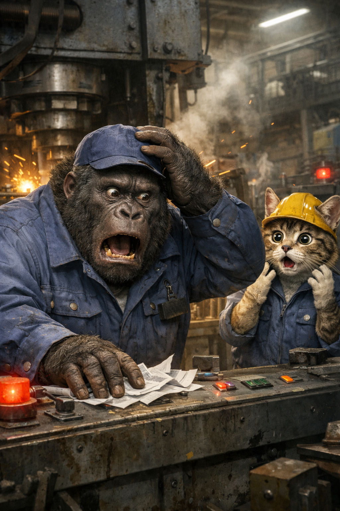

仕事を楽しむ：50歳くらいになると仕事のミスが増えるのはなぜか
栃木県の工場で、55歳の男性作業員が全自動のプレス機に挟まれて亡くなるという痛ましい事故がありました。報道では、2026年3月18日早朝、日産自動車栃木工場で発生し、警察が原因を調べているとされています。事故当時は夜から早朝の勤務帯で、機械の異常確認にあたる担当だったという報道もあります。
もちろん、詳しい原因はまだ分かりません。
安全手順の無視だったのかもしれないし、設備側の問題もあるかもしれません。
でも、このニュースを見て考えさせられるのは、人は疲れると、知っているはずの安全操作さえ抜け落ちることがあるということです。
50歳くらいになると、仕事の知識や経験はむしろ増えています。
それなのに、なぜミスが増えるのか。
大きな理由の一つは、集中力の切れ方が若い頃と変わるからです。
若い頃は、疲れていても気力である程度押し切れます。
でも年齢を重ねると、集中力は少しずつ減っていき、あるところで強制的にシャットダウンされたように切れることがあります。
怖いのは、多くの人がそのことを自覚できていないことです。
本人はまだ普通にやれているつもり。
でも実際には、
「確認したつもりだった」
「いつもの操作をしたつもりだった」
「次に何をするか分かっていたつもりだった」
そんな“つもり”が増えていきます。
つまり、ミスの原因は「能力がなくなった」ことではなく、
集中が切れているのに、自分ではまだ大丈夫だと思っていることにある場合が多いのです。
そして、疲れた状態で集中が切れた時に、難しい仕事や急ぎの対応が来ると本当に苦しくなります。
頭が回らない。
なのに仕事は待ってくれない。
すると、焦り、焦燥感、ストレスが一気に強くなります。
「まずい」
「間に合わない」
「またミスするかもしれない」
こうした気持ちが出てくると、さらに集中しにくくなります。
つまり、集中切れが感情の悪化まで引き起こすのです。
では、どうすればいいのか。
まず大切なのは、集中切れのサインを見逃さないことです。
たとえば、
同じところを何度も見直す。
簡単な判断なのに迷う。
白昼夢のように意識がぼんやりする。
ネガティブなことばかり考える。
次にやることがふっと抜ける。
確認や声出しが面倒になる。
こうした状態は、「怠け」ではなく、脳が疲れているサインかもしれません。
だから必要なのは、根性で集中を維持することではありません。
集中力の回復と、集中力の配分です。
集中が必要な作業と、あまり必要でない作業を見分ける。
負荷の低い作業の合間に、短く呼吸を整えたり、マインドフルネスで頭を戻したりする。
白昼夢状態になっても、ネガティブ思考に流れたら切り替える。
そして、重要な場面では「ここから確認」「次は保存」など、要所で短く言葉にして意識を戻す。
ずっと完璧に集中し続ける必要はありません。
むしろ50歳くらいからは、集中は維持するものではなく、切れないように配分し、こまめに回復させるものだと考えた方が現実的です。
仕事のミスが増えたと感じた時、
「自分は衰えた」とだけ考えるとつらくなります。
でも実際には、
今の自分に合った集中の使い方をまだ見つけていないだけ
なのかもしれません。
50歳くらいから大切なのは、若い頃と同じ働き方にしがみつくことではなく、
自分の集中力の特徴を知り、それを上手に守りながら働くことです。
それができるようになると、
ミスを減らすだけでなく、仕事そのものをもっと楽に、もっと楽しめるようになるはずです。